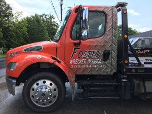

Foster Wrecker Service
(205) 854-4646
We are available 24/7 for roadside assistance and light or medium duty towing. Foster Wrecker Service provides towing, roadside assistance, and wrecker services for Birmingham, Trussville, Center Point, and surrounding areas. We have professional employees and equipment to handle several varieties of vehicles. Foster Wrecker Service operates towing services local and long distance. See our services page for a complete list of all we can do for you!
"We're always on our tows!"
